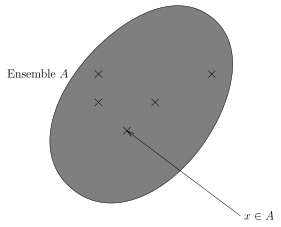

Méta théorie des ensembles
1. Théorie des ensembles
1.1. Motivations
Les mathématiques n'ont pas toujours été construites autour de la notion d'ensemble. Ce formalisme est utile dans la plupart des cas pour exprimer des propriétés sur les nombres, par exemple.
1.2. Définition
Un ensemble est constitué d'éléments. On dit que l'élément \(x\) appartient à l'ensemble \(A\) par l'écriture \(x \in A\). À l'inverse, si \(x\) n'appartient pas à l'ensemble \(A\) alors on écrira \(x \not \in A\).

Pour désigner un ensemble, on utilise les accolades en mathématiques.
La notation : \[ A = \{ 1, 2, 3 \} \] désigne l'ensemble \(A\) qui contient les éléments \(1\), \(2\) et \(3\).
On a par exemple \(1 \in A\) et \(4 \not \in A\).
On dit que \(B\) est un sous-ensemble de \(A\) lorsque tous les éléments de \(B\) sont aussi des éléments de \(A\). On notera alors \(B \subset A\). On dit aussi que \(B\) est inclus dans \(A\).
1.3. Ensembles de référence
1.3.1. L'ensemble des entiers naturels dejafait
On note \(\mathbb{N}\) l'ensemble des entiers naturels, autrement dit, \(\mathbb{N}\) est constitué de : \[ \mathbb{N} = \{ 1, 2, 3, 4, \ldots \} \]
1.3.2. L'ensemble des entiers relatifs dejafait
Vous savez depuis la cinquième qu'il existe pour tout nombre naturel, son opposé relatif. On note \(\mathbb{Z}\) l'ensemble constitué de : \[ \mathbb{Z} = \{ \ldots, -3, -2, -1, 0, 1, 2, 3, \ldots \} \]
On a donc que \(\mathbb{N} \subset \mathbb{Z}\), autrement dit tous les entiers naturels sont des entiers relatifs, mais l'inverse n'est pas toujours vrai.
1.3.3. L'ensemble des nombres décimaux
On dit que \(x\) est un nombre décimal s'il existe \(a \in \mathbb{Z}\) un entier relatif, et \(p \in \mathbb{N}\) un entier naturel qui peut être nul, tel que : \[ x = \frac{a}{10^{p}} \] On note \(\mathbb{D}\) l'ensemble des nombres décimaux.
Le nombre \num{0,23} et le nombre \num{-80123,2979123} sont décimaux. Plus généralement, tous les nombres qui admettent une partie décimale finie sont des nombres décimaux.
Le nombre \(\frac{1}{3} = 1 \div 3 = 0,33333\ldots\) n'est pas un nombre décimal. Autrement dit : \[ \frac{1}{3} \not \in \mathbb{D} \]
On obtient ainsi la chaine d'inclusion suivante : \[ \mathbb{N} \subset \mathbb{Z} \subset \mathbb{D} \]
1.3.4. L'ensemble des nombres rationnels
On dit que \(x\) est un nombre rationnel s'il existe \(p \in \mathbb{Z}\) un entier relatif, et \(q \in \mathbb{N}\) un entier naturel non nul tel que : \[ x = \frac{p}{q} \]
On note \(\mathbb{Q}\) l'ensemble des nombres rationnels.
On obtient pour l'instant que \(\mathbb{N} \subset \mathbb{Z} \subset \mathbb{D} \subset \mathbb{Q}\)
Si \(\sqrt{2}\) désigne le nombre positif qui, au carré, donne \(2\), alors : \[ \sqrt{2} \in \mathbb{Q} \]
1.3.5. L'ensemble des nombres réels.
On note \(\mathbb{R}\) l'ensemble des nombres réels. Sa vraie définition est compliquée. \(\mathbb{R}\) contient tous les nombres que vous connaissez, mais aussi \(\pi\), \(\sqrt{2}\), \(\frac{1+\sqrt{5}}{2}\), etc.
On obtient finalement : \[ \mathbb{N} \subset \mathbb{Z} \subset \mathbb{D} \subset \mathbb{Q} \subset \mathbb{R} \]
1.3.6. Existe-t-il d'autres ensembles en mathématiques ? dejafait
Il existe bien d'autres ensembles de nombres en mathématiques. On peut même en inventer une infinité, qui auront des propriétés bien différentes des nombres que l'on utilise en seconde, mais ne divulgâchons rien !
2. Exercices
2.1. Compléter avec le bon symbole
Compléter avec le bon symbole :
- \(-4 \ldots \mathbb{N}\)
- \(\sqrt{2} \ldots \mathbb{D}\)
- \(-4 \ldots \mathbb{D}\)
- \(-\frac{3}{2} \ldots \mathbb{D}\)
- \(4^{-1} \ldots \mathbb{Z}\)
- \(\frac{1}{3} \ldots \mathbb{D}\)
2.2. Compléter avec le bon symbole
Même consigne:
- \(\mathbb{N} \ldots \mathbb{D}\)
- \(\mathbb{Z} \ldots \mathbb{N}\)
- \(\mathbb{D} \ldots \mathbb{Z}\)
- \(\mathbb{Z} \ldots \mathbb{D}\)
2.3. Paraphraser
2.3.1. Exemple
L'écriture : \[ x \in \mathbb{N} \] se lit :
\(x\) appartient à l'ensemble des nombres naturels.
2.3.2. À votre tour
Comment peut-on lire ? \[ y \in \mathbb{D} \]
2.4. Paraphraser, deuxième partie
Comment doit-on lire la formule mathématique suivante ? \[ n \in \mathbb{Z} \]
2.5. Paraphraser, troisième partie
Même consigne :
Pour \(a \in \mathbb{Z}\) et \(n \in \mathbb{N}\) on a : \[ x = \frac{a}{10^{n}} \]